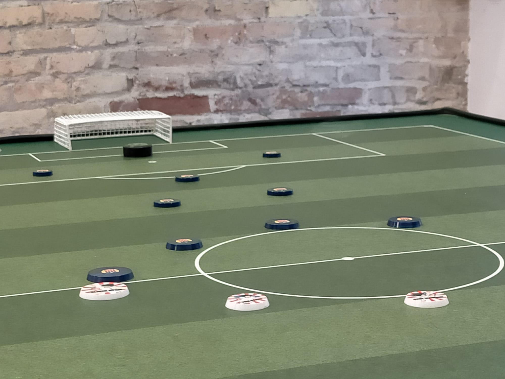
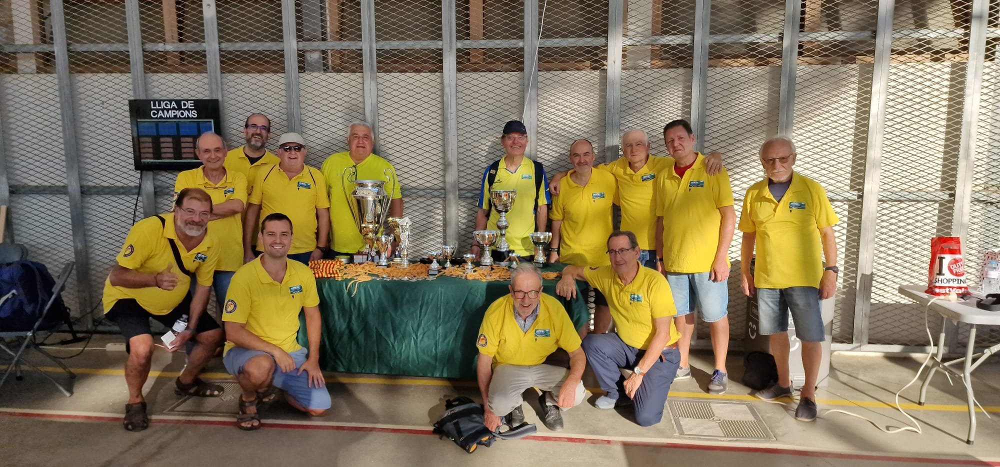

Club Futbol
Botons Barcelona
Descobreix el futbol amb botons a Barcelona. Sessions de club, demostracions, tallers per a escoles i activitats obertes al barri. Un esport que et captiva des del primer tir.
Què és el Futbol amb Botons?
Més que un joc de taula — una experiència que combina estratègia tàctica, precisió manual i l'emoció del futbol real, jugada sobre un camp verd.
Tàctic
Posiciona els botons, llegeix el joc del rival i planifica cada jugada com un entrenador real sobre el camp.
Tàctil
El control del toc, la pressió i el pes del botó marquen la diferència entre un gol i una sortida de banda.
Intergeneracional
El coneixen els avis, l'aprenen els néts. Sense barreres d'edat ni condició física — tots al mateix nivell.
De barri
Arrelat a Sant Antoni des de 2013. Un esport de club amb tornejos, comunitat i vida associativa real.


Arrels a Barcelona,
esperit de barri
Som el Club Futbol Botons Barcelona, una entitat amb llarga trajectòria vinculada al barri de Sant Antoni. Promovem i practiquem aquest esport tradicional amb passió, fomentant el respecte, la comunitat i el joc net.
Tenim secció infantil i sènior, participem en tornejos i organitzem activitats obertes al barri. No som un club esportiu qualsevol — som un punt de trobada per a veïns de totes les edats.
activa
en creixement
Cor del barri
Què podem fer com a club
Des de la partida setmanal fins a la demostració a la festa major — tenim una proposta per a cada ocasió.
Activitats regulars de club
Partides setmanals, lliga interna i entrenaments per a totes les categories.
Tallers i extraescolars
Iniciació per a escoles i centres cívics. Concentració, psicomotricitat i treball en equip.
Demostracions i exhibicions
Presència en festes majors, places i esdeveniments. Joc, participació i espectacle.
Col·laboracions
Treballem amb entitats, AMPAs, associacions de veïns i casals. Fem propostes a mida.
Un esport per a tothom
No cal ser esportista. No cal experiència prèvia. Cal tenir ganes.
Infants
Secció infantil pròpia. Aprenen el joc des de petits, desarrollen la concentració, la psicomotricitat fina i el pensament tàctic. Ideal a partir dels 6 anys.
Adults
Lliga interna, tornejos i partides setmanals. El club com a espai de competició real, comunitat i desconnexió.
Jubilats
Sessions matinals exclusives i participació plena en la lliga i tornejos del club, competint en igualtat amb els adults. El futbol de botons no entén d'edat.
Vine a
provar-ho
Carrer Viladomat 75, baixos
08015 Barcelona